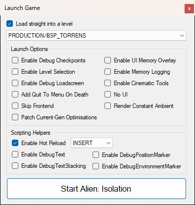
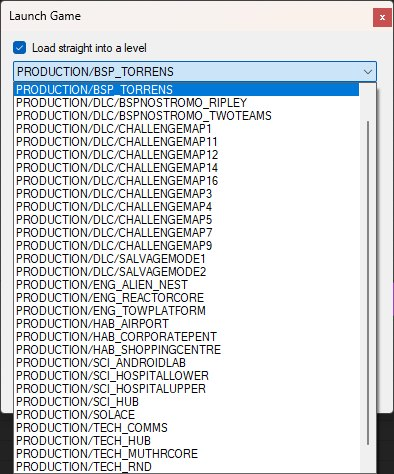
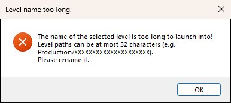
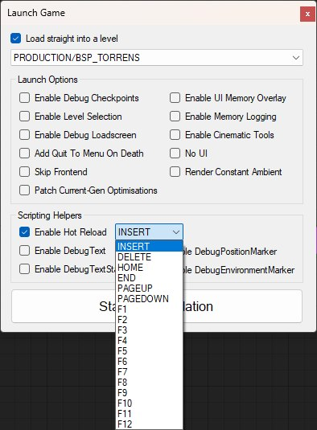
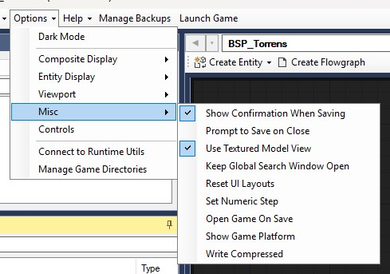

The Launch Game button at the right-hand end of the main toolbar (beside Manage Backups, shown below) opens the Launch Game dialog. From here you choose whether to boot straight into a level, toggle launch options and scripting helpers, then hit Start Alien: Isolation. The button is only enabled for Steam, Epic Games Store and GOG installs, because launching works by patching the game executable.
Options patch the game install and (for some UI mods) replace GFX files under DATA/UI.PAK. Some options aren't supported on all platforms — the Scripting Helpers and Cinematic Tools are Steam-only. The dialog itself is shown below: the level picker sits at the top; a single Launch Options group holds the four UI mods at the top of its left-hand column, with the engine patches, debug tools and Cinematic Tools filling the rest of both columns; the Scripting Helpers group sits underneath; and Start Alien: Isolation is the button along the bottom. Options that don't apply to your install are greyed out; on the Steam install pictured, with the bundled tools present, everything is available.

The Launch Game dialog on a Steam install with a level chosen; Enable Hot Reload is ticked, so its key dropdown is live.
Tick Load straight into a level and pick one from the list beneath it (the list is greyed out until the box is ticked) to have the game boot directly into that map — useful for testing a specific level without playing through from the start. Leave it unticked and the game starts at its main menu (FRONTEND) as normal.

The level list on a retail install: the campaign maps plus the DLC ones under PRODUCTION/DLC. FRONTEND is never offered.
The list holds every level in the current game install, including any you've made with Create Level. OpenCAGE preselects the level you're editing (PRODUCTION/BSP_TORRENS above), otherwise your last used choice, and the selection is remembered for next time.
Booting into a level works by writing the level's name into the game executable, and that space is fixed: a level path longer than 32 characters (for a shipped level that's Production/ plus the folder name) can't be launched into, and OpenCAGE will refuse with the message shown below rather than corrupting the patch.

These are the four boxes at the top of the left-hand column of Launch Options. They swap in OpenCAGE's modified pause/frontend/loading/game-over menus by patching GFX files inside UI.PAK (see also the UI Editor), and the file is rewritten the moment you tick or untick a box, so the change is in place whether you launch from this dialog or not:
The rest of Launch Options — Skip Frontend and Patch Current-Gen Optimisations under the UI mods, plus the debug tools, No UI and Render Constant Ambient in the right-hand column — are written into the game executable the moment you toggle them. OpenCAGE warns if it can't write, which usually means the game is still running. Cinematic Tools is the exception: it's only applied when you launch.
Mem_Replay_Logs folderHot reloading has moved into the Scripting Helpers group, where you can also choose its key.
The Scripting Helpers group adds runtime tools to the game that make script iteration faster. They're provided by a small plugin OpenCAGE copies into the game folder when any helper is enabled (and removes when none are), configured through OpenCAGE_Utils.ini beside it. The plugin only supports the Steam build, so the whole group is greyed out on other platforms. The key dropdown beside Enable Hot Reload only comes alive once that box is ticked, as shown below.

The hot reload key dropdown, open: INSERT is the default, with DELETE, HOME, END, PAGEUP, PAGEDOWN and the function keys as alternatives.
The debug entities exist in the shipped scripts but draw nothing in the retail game; these options bring them back, so a script that places a DebugText shows its message on screen as it would have in Creative Assembly's own tools.
Outside the Launch Game dialog, under the toolbar's Options dropdown (shown below):
